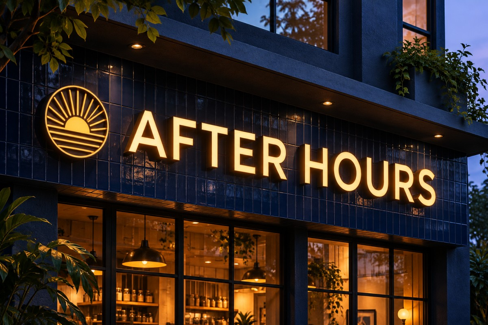
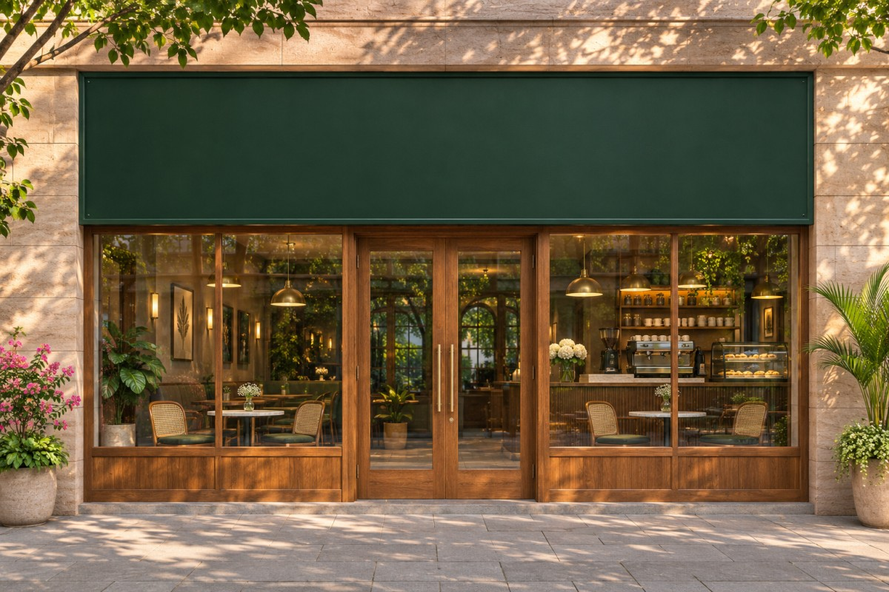
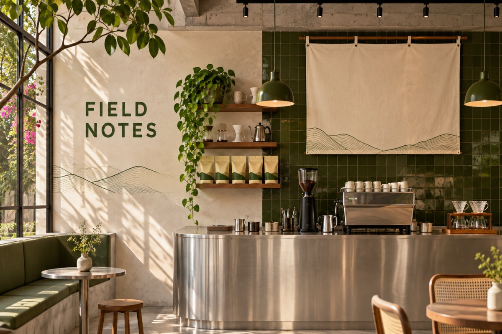

Signage
Storefront signage
Exterior signs and business identification for shops, cafés and restaurants.
GREATER NOIDA / RETAIL & F&B
Custom signage, in-store branding and retail fit-outs for shops, cafés and restaurants.

CUSTOM SIGN DESIGNER
Preview lettering, colours and lighting on a sample storefront or your own shop photo. Carry your design into an estimate or try the demo checkout.

MORROW COFFEESERVICES
Find the right starting point for a new storefront, an interior refresh or a store opening.
Signage
Exterior signs and business identification for shops, cafés and restaurants.
Signage
Illuminated lettering and motifs for visible walls, counters or storefronts.
Branding
Branded elements for customer-facing areas inside retail and F&B spaces.
Fit-outs
Retail environments and turnkey work for new sites and brand refreshes.

DESIGN / FABRICATION / INSTALLATION
Share the location, launch date and areas you need branded. Start with a single sign or describe a broader fit-out.
See capabilities